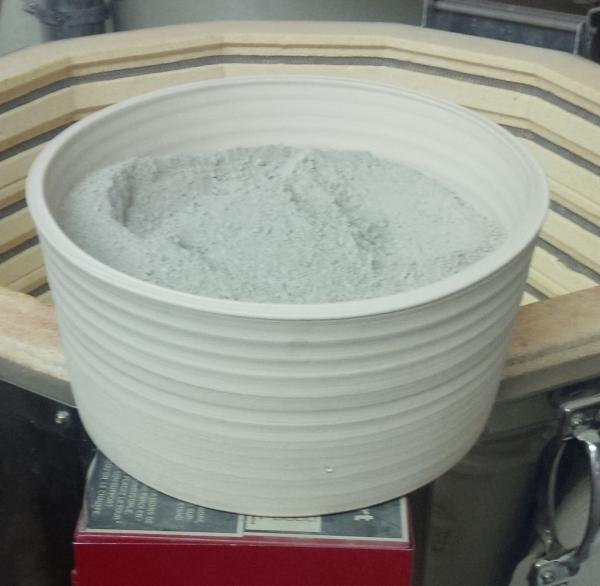
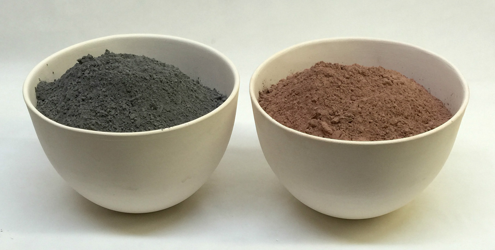
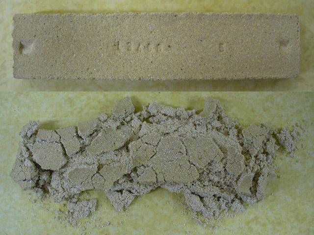
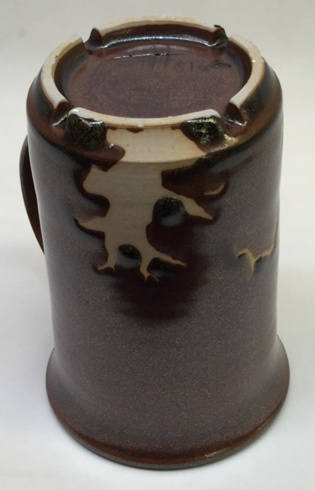
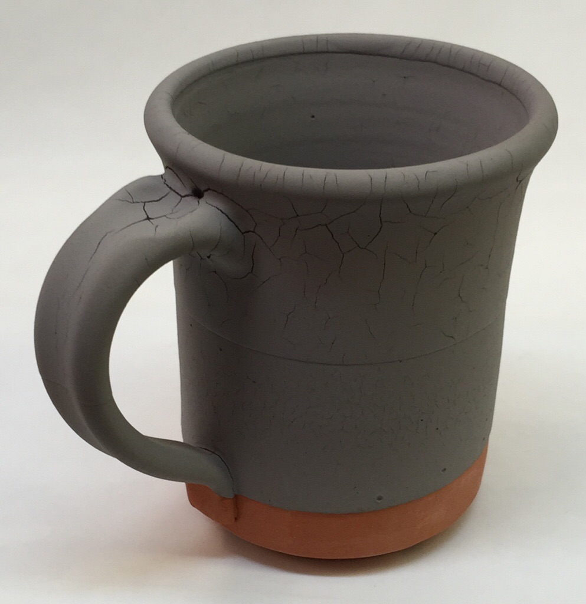
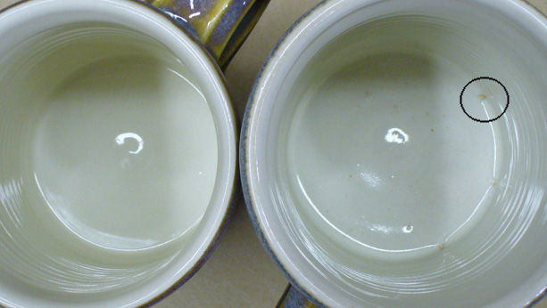
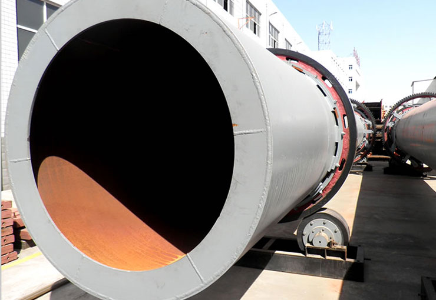
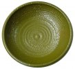
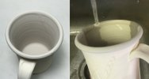

Calcination
Calcining is simply firing a ceramic material to create a powder of new physical properties. Often it is done to kill the plasticity or burn away the hydrates, carbonates, sulfates of a clay or refractory material.
Key phrases linking here: calcination, roasting, calcined, calcine, roasted - Learn more
Details
The calcining process is most commonly used to remove some or all unwanted volatiles from a material (e.g. H2O, CO2, SO2 - thus eliminating the LOI) and/or to convert a material into a more stable, durable or harder state. However, in ceramics, it is also useful to destroy the plasticity of a clay for use in glazes (non-plastic clays reduce drying shrinkage). Varying temperatures are employed to calcine materials, depending on the decomposition temperature of the volatiles being burned out or the degree of sintering (and thus physical characteristics change) needed.
The cement industry is by far the largest consumer of calcined clay. And the largest calcined powder producers. They heat-treat the kaolin in rotary kilns at 1450C (mixed with limestone and iron ore to form clinkers ground with gypsum to get the final product).
To produce molochite, lump kaolins are calcined at high temperatures (but lower than that of the cement process), they are then ground and sized. Powdered calcined kaolin is burned at lower temperatures.
Potters typically calcine clays to enable using them in higher percentages in glazes, slips and engobes (the electrolytics of clay particles are destroyed by this process resulting in less shrinkage while drying). Typical calcine temperatures are not necessary to accomplish this, only about 1000F is needed (cone 022 or red heat). At this temperature, the process is commonly called "roasting". The loose powder can be fired in bisque vessels made of pottery clay (any clay can easily withstand this temperature. For large or heavy-walled roasting vessels, fire slower (e.g. 200F per hour). For small amounts, 500F/hr should be fine. Hold at temperature for the time necessary for the heat to penetrate (start with 30 minutes). If any black powder remains in the center extend the soak time next firing.
The calcining and roasting processes produce a material having no LOI, if it is being substituted into a glaze this needs to be considered. For example, if a kaolin loses 12% weight on firing, then 12% less of the calcine would be needed in the glaze recipe.
Calcining can actually produce a less stable form of certain materials, they gradually want to revert to the former carbonated or hydrated state. For a good example of this, mix calcium carbonate with kaolin and make a bar and fire it. Out of the kiln, it will appear to be a hard ceramic. But after several days it will absorb CO2 from the air and completely fracture into a powder. Pour water on it and it will immediately fracture and generate considerable heat as it disintegrates.
Calcined clays are not normally used as ingredients for traditional clay bodies (because of cost and plasticity loss). But for refractories and high-tech product manufacture the use of calcined materials is common.
Related Information
Roast or calcine your Ravenscrag Slip (or other clays) for much better results

This picture has its own page with more detail, click here to see it.
Calcined or roasted clays are indispensable in making many types of glazes, they reduce drying shrinkage (and thus cracking and crawling) compared to those made using raw clay. In a glaze, you can fine-tune a mix of raw and roast clay to achieve a compromise between dry hardness and low shrinkage.
This is Ravenscrag Slip, we roast it to 1000F (roasting is adequate to destroy plasticity and produces a smoother powder than calcining at higher temperatures). To make sure the heat penetrates for this size vessel I hold it for 2 hours at 1000F. Calcined koalin is getting harder to find, this same process can be used to make your own from a raw kaolin powder. One thing is worth noting: Weight lost on firing actually means that less of the roasted powder is needed to yield the same amount of material to the glaze melt, it can be anywhere from 5-12% less.
Roasting Alberta and Ravenscrag Slips at 1000F: Essential for good glazes

This picture has its own page with more detail, click here to see it.
Roasted Alberta Slip (right) and raw powder (left). These are thin-walled 5 inch cast bowls, each holds about 1 kg. I hold the kiln at 1000F for 30 minutes. Why do this? Because Alberta Slip is a clay, it shrinks on drying (if used raw the GA6-B and similar recipes will crack as they dry and then crawl during firing). Roasting eliminates that. Calcining to 1850F sinters some particles together (creating a gritty material) while roasting to 1000F produces a smooth, fluffy powder. Technically, Alberta Slip losses 3% of its weight on roasting so I should use 3% less than a recipe calls for. But I often just swap them gram-for-gram.
What happens when a limestone clay mix is fired to cone 6?

This picture has its own page with more detail, click here to see it.
The top bar is a mix of calcium carbonate and a middle temperature stoneware clay (equal parts). On removal from the kiln it appears and behaves like a normal stoneware clay body, hard and strong. However, pour water on it and something incredible happens: in a couple of minutes it disintegrates (as it rehydrates). And generates lots of heat as it does so.
Fixing a crawling problem with Ravenscrag Tenmoku

This picture has its own page with more detail, click here to see it.
Crawling of a cone 10R Ravenscrag Slip iron crystal glaze. The added iron oxide flocculates the slurry raising the water content, increasing the drying shrinkage. To solve this problem you can calcine part of the Ravenscrag Slip, that reduces the shrinkage.
Clay in a glaze recipe: Why is it there?
What happens when there is too much?

This picture has its own page with more detail, click here to see it.
If I put this on social, I might get 100 comments on the cause. Most would say it's applied too thick. That is not correct. At the top, it is too thick, but not at the bottom (where it is still cracking). Crawling during firing is almost certain.
Before offering any opinion, one needs to sanity check the recipe. This one, GA6-B, contains a lot of clay. Why do dipping glazes contain clay, usually kaolin, ball clay? To suspend the slurry, slow down drying, gel the slurry to make it thixotropic and harden the layer on drying. But their chemistry is also important, clays supply the all-important Al2O3 and SiO2 to the melt (which would otherwise have to come from feldspar). Certain clays excel at suspending. 15-20% EP kaolin, for example, is all that is needed. It’s not that plastic, but sticky and thixotropic (Grolleg and New Zealand kaolins are similar or even better). 10% of a gelling ball clay might be enough. However, 50% of a silty non-plastic clay might be needed. When the clay has too much influence, glazes shrink too much as they dry and then crack like this. Ones lacking clay (or employing one that is not suitable) have poor application properties (for dipping) and are powdery. This glaze has 80% pure raw Alberta Slip. That is a plastic clay, no wonder this is happening! 50% of it needs to be roasted.
Two glazes. One crawls, the other does not. Why?

This picture has its own page with more detail, click here to see it.
The glaze on the right is crawling at the inside corner. Why? Multiple factors contribute. The angle between the wall and base is sharper. A thicker layer of glaze has collected there (the thicker it is the more power it has to impose a crack as it shrinks during drying). It also shrinks more during drying because it has a higher water content. But the leading cause: Its high raw clay content increases drying shrinkage. Calcining part of the raw clay destroys its affinity for water (which is what makes it plastic), this is an effective way to deal with this. Or doing a little chemistry to source some of the Al2O3 from materials other than clay (e.g. a frit having a higher Al2O3 content).
A rotary drier suitable for drying and calcining ceramic powders and granulates

This picture has its own page with more detail, click here to see it.
From Henan Hongxing Mining Machinery Co. in China. This unit is capable of 7 tons/per/hour and can fit in a standard shipping container.
A rotary drier made by Feeco International
This picture has its own page with more detail, click here to see it.
They have exceptional support and are very open about their engineering and designs.
Inbound Photo Links
|
 Badly crawled glaze fired at cone 5 reduction |
 Glaze cracking during drying? Wash it off and then do this. |
Links
| Materials |
Bone Ash
|
| Materials |
Calcined Alumina
A high-purity Al2O3 used in technical ceramics, refractories, glazes, and bodies for its extreme hardness, high-temperature strength, and chemical stability. |
| Materials |
Calcined Dolomite
|
| Materials |
Calcined Kaolin
This is kaolin powder that has been fired in a furnace to remove the 12% crystal water and render it non-plastic. |
| Materials |
Calcined Missouri Fireclay
|
| Materials |
Mulcoa 70 Mullite
|
| Materials |
WRA Calcined Alumina
|
| Materials |
Calcined Topaz Kaolin
|
| Troubles |
Crawling
Ask yourself the right questions to figure out the real cause of a glaze crawling issue. Deal with the problem, not the symptoms. |
| Glossary |
Glaze Layering
In hobby ceramics and pottery it is common to layer glazes for visual effects. Using brush-on glazes it is easy. But how to do it with dipping glazes? Or apply brush-ons on to dipped base coats? |
| Glossary |
Shino Glazes
Traditional Japanese high feldspar glazes having cream to orange color flashing or blushing. Potters today seek to emulate the Shino appearance using a wide range of recipes. |
| Glossary |
Suspension
In ceramics, glazes are slurries. They consist of water and undissolved powders kept in suspension by clay particles. You have much more control over the properties than you might think. |
| Glossary |
Magnesia Matte
Magnesia matte ceramic glazes are “microstructure mattes” while calcia mattes are “crystal mattes”. They have a micro-wrinkle surface that forms from a high viscosity melt and microscopic phase separation, both of which prevent levelling on freezi |
| URLs |
https://feeco.com/the-calcination-of-kaolin-clay/
The calcination of kaolin |
| URLs |
http://www.qal.com.au/a_process/process4.html
Calcination of Alumina |
| URLs |
https://feeco.com/rotary-dryers/
Feeco Rotary Driers |
| Temperatures | Dehydroxylation in kaolin, ball clay (450-650) |
 PayPal | No tracking, No ads, No paywall, No transient content! Just organized, concise information constantly updated and improved. Was this helpful? Consider supporting me. |
| By Tony Hansen Follow me on        |  |
Got a Question?
Buy me a coffee and we can talk 

https://digitalfire.com, All Rights Reserved
Privacy Policy